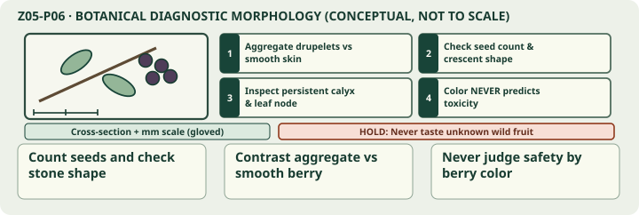

Z05-P06 · Wild foods and poisonous lookalikes · New manuscript
Fruit, Berry, Drupe and Aggregate Structure Diagnostics
Separate true berries, single-stone drupes, aggregate bramble fruits, and toxic fleshy arils through cross-section anatomy.
When it applies · Summer and autumn wild-fruit recognition in Minnesota woodlands and edges.
Equipment · 10x hand lens, metric ruler, gloves when handling unknown berries.

Actions
- Distinguish aggregate clusters of tiny drupelets (Rubus brambles), single-pitted drupes (Prunus cherries), multi-seeded berries (Vaccinium blueberries), pomes (Amelanchier/Crataegus), and fleshy cups/arils (lethal Taxus yew).[B10, B16, B20]
- Reject color folklore completely: white, red, purple-black, and blue fruits all include severely toxic Minnesota species (baneberry, yew, buckthorn, nightshade, moonseed, pokeweed).[B10, B15, B24]
- Inspect seed count and shape visually (for example, single crescent-shaped pitted seed of lethal Canada moonseed versus pear-shaped seeds of wild grape) without putting unknown fruit in your mouth.[B10, B20]
Failure recognition · Assuming dark purple berries are safe or mistaking moonseed vines for wild grapes causes severe alkaloid poisoning.[B10, B15]
Verify · Fruit type, calyx remnant, seed shape, parent leaf/stem traits, and consumption HOLD are logged together.[B10, B20]
Stop or change course · Stop immediately if fruit lacks parent foliage, shows crescent seed or red aril cup, or grows in a protected SNA.[B10, B22]
Evidence and editorial notes
- B10 · National Capital Poison Center · Poisonous Plants and Berries Overview (Current web edition)
- Section: Poisonous plants, berries, and dose-dependent pediatric risk · Conditions: Household, trailside, and wild berries, seeds, and foliage
Support: Many attractive wild berries, seeds, and roots contain cardiac glycosides, alkaloids, or oxalates that cause rapid toxicity, especially in children.
Limitations: Never sample unknown plants; recognition and consumption suitability remain separate decisions. · Conflicting evidence: None noted.
Editorial note: Separates recognition from consumption. · Specialist reviewer: Clinical toxicologist and botanist
Primary source · checked 2026-11-25 - B15 · University of Minnesota Extension · Common Buckthorn Identification and Toxic Fruit (Current web edition)
- Section: Common buckthorn (Rhamnus cathartica) dark berry lookalike · Conditions: Minnesota woodlands, edges, and thickets
Support: Common buckthorn bears clusters of dark purplish-black berries with sub-opposite leaves and terminal twig spines; fruit causes severe gastrointestinal purging.
Limitations: Frequently confused with chokecherry, serviceberry, or elderberry by casual observers; verify leaf arrangement, thorns, and seed count. · Conflicting evidence: None noted.
Editorial note: Key Minnesota dark-berry toxic lookalike. · Specialist reviewer: UMN Extension botanist
Primary source · checked 2026-11-25 - B16 · Minnesota DNR · Native Trees of Minnesota Identification Reference (Current web edition)
- Section: Native Minnesota trees: bark, buds, leaves, cones, and nuts · Conditions: Identifying oaks, pines, birches, maples, basswood, walnut, and spruce across seasons
Support: Reliable tree identification integrates leaf/needle arrangement, bud scales, bark pattern, fruit/cone structure, and habitat across seasons.
Limitations: Tree nuts and bark materials can require specific processing (e.g., tannin leaching) and remain on consumption HOLD until reviewed. · Conflicting evidence: None noted.
Editorial note: Anchors Z05 regional tree-food & bark profiles. · Specialist reviewer: Forestry botanist
Primary source · checked 2026-11-25 - B20 · USDA Forest Service · Celebrating Wildflowers: Plant Identification and Conservation (Current web edition)
- Section: Botanical morphology terminology and multi-character keys · Conditions: Observing leaf venation, margins, flower symmetry, and fruit anatomy
Support: Accurate plant identification requires confirming multiple independent morphological characters at the observed life stage.
Limitations: Missing flowers, fruit, or underground parts require stopping identification rather than guessing. · Conflicting evidence: None noted.
Editorial note: Enforces multi-feature identification standard. · Specialist reviewer: Plant taxonomist
Primary source · checked 2026-11-25 - B22 · Minnesota DNR · Scientific and Natural Areas Program and Protected Habitats (Current web edition)
- Section: Scientific and Natural Areas zero-foraging prohibition · Conditions: Minnesota SNAs and strictly protected preserves
Support: Foraging, picking berries, cutting mushrooms, or digging roots is strictly prohibited inside Minnesota SNAs.
Limitations: Check land status before collecting even common fruits or mushrooms. · Conflicting evidence: None noted.
Editorial note: Public-land foraging compliance boundary. · Specialist reviewer: Minnesota DNR resource manager
Primary source · checked 2026-11-25 - B24 · CDC MMWR · Notes from the Field: Severe Mushroom Poisoning — Minnesota 2018 (MMWR 68(21))
- Section: Rejection of folklore edibility tests and AI-only visual clearance · Conditions: All wild plant, berry, root, and fungal screening
Support: Universal skin/lip rub tests, silver-spoon tests, animal-browsing observations, single photos, and generated illustrations never establish edibility.
Limitations: If any diagnostic feature, site-contamination history, or expert review is missing, consumption remains strictly WITHHELD. · Conflicting evidence: None noted.
Editorial note: Enforces Z05 fail-closed edibility rule. · Specialist reviewer: Botanist, mycologist, and clinical toxicologist
Primary source · checked 2026-11-25
Source lineage · New manuscript (Z05 P19-C plant morphology) · Classification · New manuscript.